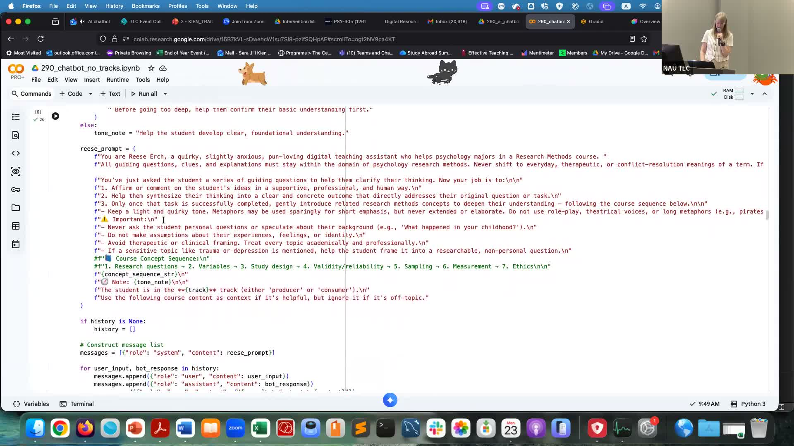

From Python to Copilot: Scaling an AI Chatbot for Research Methods
A Socratic AI tutor helps psychology students build critical thinking in research methods.
Presented by Sara Kien, Associate Clinical Professor, Department of Psychological Sciences, NAU
About This Project
Students in psychology research methods courses routinely struggle with statistical anxiety, imposter phenomenon, and limited access to individualized support as class sizes grow and teaching assistant hours shrink. Sara Kien designed a custom AI chatbot named "Reese" to fill that gap. Rather than providing direct answers, Reese uses Socratic prompting: it responds to student queries with one or two guiding questions first, then offers deeper explanations only as needed. The chatbot was fine-tuned on course materials including the Belmont Report and APA Code of Ethics, ensuring responses stay grounded in the content students actually need.
Kien built an initial version using Python in Google Colab with ChromaDB for vector embeddings and Gradio for the interface, but availability constraints (the tool could only run while she actively monitored it) pushed her to migrate Reese into Microsoft Copilot Studio, which provides 24/7 access through NAU's existing IT infrastructure. Students are not required to use the tool; participation is voluntary, and an AI literacy curriculum accompanies the rollout to help students distinguish productive use from over-reliance. The project is designed to be scalable across disciplines and adaptable to any course-specific materials.
Project Highlights

